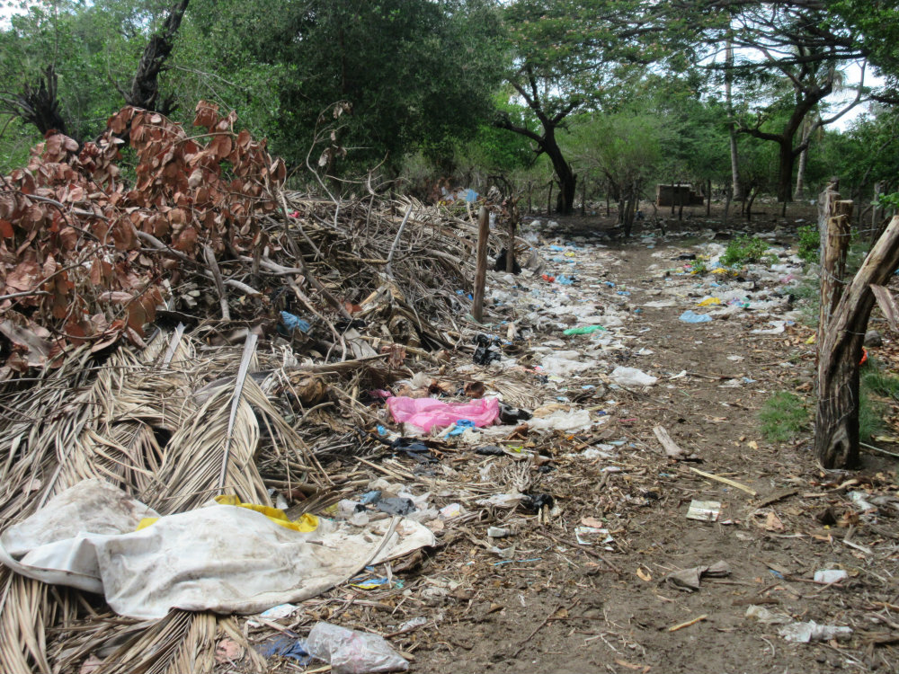

Waste
Making a Solid Waste Management Plan
"The solid waste situation in Tasajera is of critical condition" (Recio Paredes, 2015).
Waste is a natural by-product of economic and social activities, and its management needs to be properly addressed by the public authorities. However, in Tasajera, there is currently no solid waste management plan (SWMP) in place, which causes the local community to dump their waste in numerous unattended locations or burn it at the open air without proper safety regulations. It is important to note that community leaders and the community at large wish to have a clean island, but their bottom-up attemps have so far failed.

There are 3 main issues that we would like to highlight regarding solid waste in Tasajera:
- Health concerns
- Ecotourism hinderance
- Public involvement
Several health-related concerns have been raised by numerous NGOs and religious groups that have been involved in the community. Chief among them is the plausible correlation between the amount of solid waste burning and the high indices of respiratory diseases. At this point, Tasajera Tideas only posseses local data from 2013 on the percentage of households burning (63%) and burying (37%) their waste.
Another important motivation to establishing a SWMP is the perceived economic benefit in the form of tourism. External actors (e.g. CORDES, Sol de Tasajera, EMANA) have advocated that a clean community would be more inviting for tourists, who would consequently spend their money in Tasajera.
Finally, when it comes to community attemps to develop a comprehensive SWMP, its leaders have faced consistent disappointment from the municipal authorities. Tasajera island is within the jurisdiction of San Luis La Herradura, which is now being administered by Mayor Mario Ticas (PCN party). Community leaders and external actors have voice their disappointment to Tasajera Tides regarding the lack of support from Mr. Ticas to develop a SWM plan in Tasajera.
Economy
Economic indicators are essential for securing the long-term sustainability of a community.
Society
The social dimension of a community influences the health and wellbeing of its members.
Environment
Environmental issues have a strong impact on the wellbeing of a community.